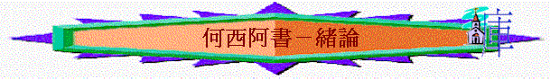

Ｉ．書名：何西阿（救恩salvation意思)
ＩＩ背景：（何１：１－２）
Ａ．王朝
「當烏西雅，約坦，亞哈斯，希西家，作猶大王，約阿施的兒子耶羅波安作以色列王的時 候．．．．」（何１：１）
１．南國（猶大，猶大家，耶路撒冷）
ａ．烏西雅--好王,但邱壇沒廢去（王下１４：２１，１５：３－４）
ｂ．約 坦--好王,但邱壇沒廢去（王下１５：３２－３５）
ｃ．亞哈斯--不好,行可憎的事（王下１６：１－９）
ｄ．希西家--好王,邱壇廢去（王下１８：１－４，１３）
２．北國（以法蓮，以色列家，撒瑪利亞）
ａ．耶羅波安（二世）
ｉ．【他收回以色列邊界之地 ．．．． 因為耶和華看見以色列人甚是艱苦，無論困住的，自由的，都沒有了．．．．乃藉．．．．耶羅波安拯救他們】。（王下１４：２５－２７）
ｉｉ．【．．．．作王四十一年．．．．】【．．．．凡他所行的和他的勇力，他怎樣爭戰．．．．】（王下１４：２３，２８）
ｉｉｉ．【他行耶和華眼中看為惡的事，不離開尼八的兒子耶羅波安．．．．】（王下１４：２４ 參王上１２：２５－３３）
（１）．私建邱壇
（２）．敬拜偶像
（３）．自立祭司
（４）．私定節期
ｂ．撒加利雅
【他行耶和華眼中看為惡的事，效法他列祖所行的，不離開尼八的兒子耶羅波安 使以色列人陷在罪裡的那罪. 】（王下１５：９）
ｃ．沙龍
ｄ．米拿現
【．．．．終身不離開尼八的兒子耶羅波安．．．．】（王下１５：１８）
【亞述王普勒來攻擊以色列國，米拿現給他一千他連得銀子，請普勒幫助他堅定 國位】（王下１５：１９）
ｅ．比加轄
【．．．．不離開尼八的兒子耶羅波安．．．．】（王下１５：２４）
ｆ．比加
【．．．．不離開尼八的兒子耶羅波安．．．．】（王下１５：２８）
【．．．．亞述王．．．．來奪了以雲，亞伯伯瑪迦．．．．全地，將這些地方的居民都擄到亞述去了.】（王下１５：２９）
ｇ．何細亞（北國最後的王，此時南國希西家仍在位）
【他行耶和華眼中看為惡的事，只是不像在他以前的以色列諸王】（王下１７：２）
【亞述王．．．．上來攻擊何細亞，何細亞就服事他．．．． 】（王下１７：３）
【何細亞背叛，差人去見埃及王梭．．．．】（王下１７：４）
【何細亞第九年亞述王攻取了撒馬利亞，將以色列人擄到亞述．．．．】（王下１７：６）
總結：南國--稍有希望
北國--總不離開罪,倚靠外邦
Ｂ．北國人民
１．被虜之原因：
【這是因以色列人得罪那領他們出埃及地．．．．耶和華他們的神，去敬畏別神，隨從．．．．外邦人的風俗和以色列諸王所立的條規】（王下１７：７－８）
２．犯罪的實況（王下１７：９－１８）
ａ．【．．．．在他們所有的城邑．．．． 建築邱壇】
ｂ．【在各高岡上，各青翠樹下，立柱像和木偶】
ｃ．【在邱壇上燒香，效法．．．．外邦人所行的．．．．且事奉偶像 ．．．．】
ｄ．【但耶和華藉眾先知，先見勸戒以色列人．．．．他們卻不聽從．．．．】
ｅ．【厭棄他的律例．．．．所立的約．．．．】
ｆ．【．．．．為自己鑄了兩個牛犢的像，立了亞舍拉，敬拜天上的萬象，事奉巴力】
ｇ．【又使他們的兒女經火，用占卜，行法術．．．．】
Ｃ．地方－北國
１．吉甲（何４：１５；９：１５；１２：１１）
－－以前會幕所在地
－－但卻成為異端獻祭之所，宗教之重地
２．伯亞文（何４：１５；５：８；１０：５）
－－原稱為伯特利（耶和華之家）
－－現在卻是拜牛犢之地，所以又稱為伯亞文（意思：邪惡之家）
３．米斯巴，他泊山（何５：１）
－－王室及祭司帶領百姓拜偶像之所，設有邱壇。
大總結：地大行淫亂,離棄神 (何1:2)
ＩＩＩ作者：何西阿－－備利的兒子
－－事奉的榜樣
Ａ．恆久的事奉（１：１）
Ｂ．絕對的順服（１：２）
Ｃ．全然的委身（１：４，６，８－９）
ＩＶ．寫書目的
除了指出他們的罪惡，更希望他們．．．．（何６：４；１２：６；１４：１）
Ｖ．中心／主題－－－－非人間的愛情
Ａ．從結構而看（不斷重覆）
１：１－２ ：神的斥責
１：３－９ ：神的捨棄
１：１０－２：１ ：神的復眷
２：２－８ ：神的斥責
２：９－１３ ：神的捨棄
２：１４－３：５ ：神的復眷
４：１－７：７ ：神的斥責
. ．．
．．
．．
．．
．．
．．
Ｂ．從內容而看
１－３ ：描述何西阿娶一個淫婦
４－１４ ：講述以色列犯了屬靈上的姦淫，但神仍重新拯救，憐愛，醫治他們
Ｃ．從經文而看
３：１－２
１１：８－９ 「非人間的愛情－－怎能捨棄選民」
１４：４
ＶＩ．大綱
|
非人間的愛情－－怎能捨棄以色列 |
|||||||
|
象 徵 |
事 實 |
||||||
|
怎能捨棄淫婦 |
怎能捨棄以色列 |
||||||
|
１－３ |
４－１４ |
||||||
|
去娶淫婦 |
追討淫行 |
再愛淫婦 |
以色列 的罪行 |
以色列 的被罰 |
耶和華 的無奈 |
耶和華 的審判 |
耶和華 的眷愛 |
|
1-2:1 |
2:2-23 |
3 |
4 |
5:-6:3 |
6:4-7:7 |
7:8-10 |
11-14 |
|
何西阿娶淫婦 |
耶和華愛選民 |
||||||